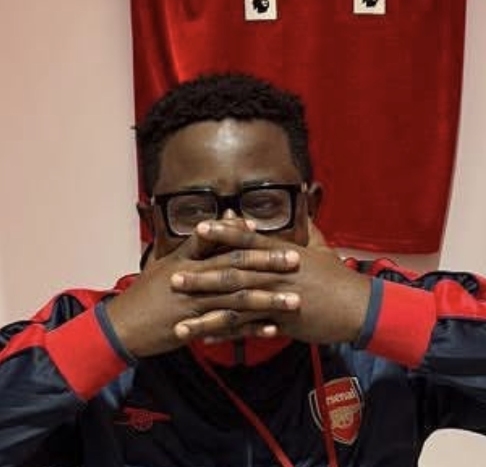

Long before there were pools, brackets, or a single cup arranged in Christmas Tree formation, there was a man with a folding table and an unreasonable amount of conviction. Sayor looked upon an empty rooftop and saw not a balcony, but an institution.
Where others saw a casual game, he saw governance. Where others saw plastic cups, he saw a constitution waiting to be written. They say he drafted the first regulations on a napkin, outlawed the 3-5-2 formation purely on principle, and personally decreed that the cups be filled with water — a ruling historians now regard as visionary.
Through sheer determination — and a refusal to let anyone leave until a champion was crowned — Sayor willed The Palace into existence. The 1st Edition was his proof of concept. The 2nd is his legacy. We do not merely play beer pong here; we honour the dream of one man who believed a rooftop could become a republic.
Long may he reign. 👑
The inaugural champions. Won it as partners — now they meet as rivals in the 2nd Edition, on opposite teams in Pool B. The Palace rewards no loyalty.
The original flame-keeper. Set the benchmark for On Fire activations in the 1st Edition. Returns this year alongside Malik — the defence starts now.
[OPTIONAL — add finalists, memorable moments, highest cup differential, most outrageous called shot, etc.]
To be decided on 30 May 2026. The bracket is set. The cups are filled. The Palace awaits its new champion.
The Palace is not a place. It is a standard. It was here before you arrived, and it will be here long after the last cup is cleared from the table.